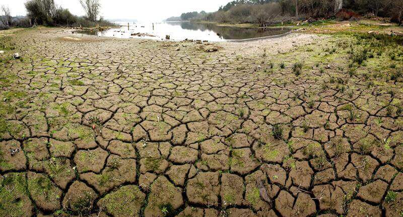
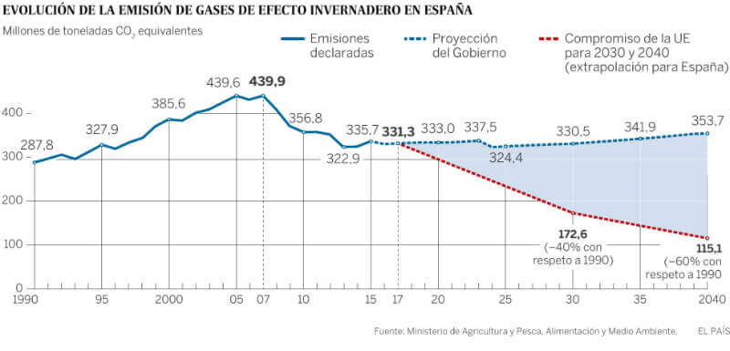

España necesita un plan contra el cambio climático
Dia 30 de Mayo, 14:23


Todos los miembros de la UE deben enviar cada dos años un informe sobre la evolución prevista de sus emisiones de gases de efecto invernadero, responsables según el consenso científico del cambio climático. España envió el 21 de abril el suyo y, con las medidas que tiene en marcha ahora, en 2040 —el último año para el que ofrece previsiones el Gobierno— las emisiones globales del país serán 353,7 millones de toneladas de CO2 equivalente —la unidad de medidas de los gases de efecto invernadero—. Esto supone 18 millones más que de lo que España expulsó a la atmósfera en 2015, el último año con cifras cerradas. Es decir, España —uno de los países europeos más expuestos a los efectos dañinos del calentamiento— no solo no reducirá sus emisiones, sino que las aumentará en los próximos 25 años.
Esta proyección, admite la Oficina Española de Cambio Climático, pone de "manifiesto que son necesarias nuevas políticas y medidas para cumplir" con los objetivos que tiene el país como miembro de la UE y firmante del Acuerdo de París. El Gobierno de Mariano Rajoy se ha comprometido a aprobar una Ley de Cambio Climático y Transición Energética. El jueves y el viernes se celebrarán en Madrid unas jornadas de expertos que deben servir para elaborar el anteproyecto de esa ley. Las inaugurarán Rajoy; el comisario europeo de Acción por el Clima y Energía, Miguel Arias Cañete; la ministra de Medio Ambiente, Isabel García Tejerina, y el ministro de Energía, Álvaro Nadal. La ley debe "facilitar el cumplimiento de los compromisos internacionales y europeos adquiridos por España", señala Medio Ambiente.
Pero, ¿qué compromisos tiene España?
Objetivo Europeo
Como miembro de la UE, España actúa como parte de un bloque en las negociaciones climáticas. Es decir, se adhiere a los compromisos de la UE dentro del Acuerdo de París, que se firmó en 2015 y se empezará a aplicar en 2020. La meta que se fijó la UE en ese acuerdo fue reducir en 2030 un 40% sus emisiones respecto a las de 1990. Pero, según el último informe de Aplicación del Acuerdo de París de la Comisión (de noviembre de 2016), con las medidas actuales que la UE tiene en marcha solo se conseguirá bajar un 26% las emisiones en 2030. Para cubrir la brecha existente la UE está negociando un paquete de medidas —a aplicar entre 2020 y 2030— que busca establecer el reparto de esfuerzos entre los 27 para lograr ese objetivo del 40% de reducción global. En 2040, ese porcentaje debería estar en el 60% y, en 2050, superar el 80% de disminución.
Dos grupos de emisiones
Para aplicar los recortes de CO2 dentro de las políticas climáticas de la UE, las emisiones se dividen en dos grupos. Por un lado están las de los sectores afectados por el mercado europeo de derechos de emisión —que le pone precio a la tonelada de CO2 expulsada a la atmósfera—. Dentro de este sistema hay 12.000 instalaciones de toda la UE, entre centrales de generación de electricidad y grandes fábricas. Y estas 12.000 instalaciones emiten alrededor del 45% de todos los gases de efecto invernadero de la economía europea. El objetivo que tiene que cumplir la UE es haber reducido un 43% las emisiones de este sector para 2030 respecto a las de 2005. No es una meta descabellada; solo entre 2005 y 2015, bajaron un 24%.
El otro grupo —que acumula el 55% restante de todas las emisiones de la UE— es el conocido como el de los difusos e incluye los gases expulsados por los sectores residencial, agrícola, de residuos y, sobre todo, el transporte, que va retrasado en el proceso de descarbonización. En este caso, el objetivo para toda Europa es reducir las emisiones de los sectores difusos un 30% en 2030 respecto a las de 2005. Entre 2005 y 2015, el CO2 expulsado por estos sectores cayó un 12% en el conjunto de la UE.
Difusos
En el caso español, casi el 60% de las emisiones del país se corresponden con los sectores difusos. Y, dentro de ellos, cerca del 40% es responsabilidad del transporte. La UE está todavía negociando el reparto por países de los esfuerzos. Pero el documento de partida de la Comisión Europea establecía que a España le correspondía reducir un 26% sus emisiones difusas respecto a las de 2005.
Esto supondría que, para 2030, las emisiones de estos sectores tendrían que ser de 176,1 millones de toneladas. No parece un gran esfuerzo; en 2015 estas se situaron en los 194,7 millones. Y, sin embargo, el documento de previsiones enviado a la Agencia Europea del Medio Ambiente por España apunta a que en 2030 los sectores difusos en el país emitirán casi 22 millones más del objetivo que le ha fijado la comisión para entonces. El principal problema es el transporte que, según la previsión del Gobierno, incrementará un 14,5% las emisiones solo entre 2015 y 2030.
Mercado de emisiones
En el caso de esas 12.000 instalaciones europeas —un millar son españolas— sujetas al mercado de CO2, la UE no establece objetivos por países. Pero sí hay medidas concretas; por ejemplo, en el desarrollo de las renovables. La comisión ha propuesto que el 27% de todo el consumo de energía en la UE proceda de fuentes renovables en 2030. El Parlamento europeo ha pedido elevar esa cuota al 35% y que cada país tenga un objetivo vinculante. A España le correspondería, según la Eurocámara, un 36%, lo que supondría un incremento considerable, ya que en 2015 la cuota de energía limpias estaba en el 16,2%.